jVLT - a vocabulary learning tool
Vocabulary
Word list
Initially the word list shows all words of your vocabulary. There are two ways to search for certain entries. The first possibility is to enter a string in the "Filter" text field and press "Enter" afterwards. The list then shows those words which contain the filter string and those that have a pronunciation or sense which contains it. If you want to see the full list again, delete the string in the filter field and press "Enter" again.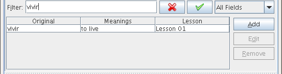
The second possibility is to activate the "Advanced filter" box and then to define a filter in the dialog that appears after pressing the button labelled "Advanced...".
Filters are composed of one or many subfilters, each represented by a row which contains three columns. In the first column, you select the attribute (Original, Pronunciation etc.), in the second column the comparison type, e.g., "equals", "greater than", "less than". In the last column the value is entered. Dependent on the attribute and the comparison type, the value is a string, a number, a date or a list of strings. You can add and remove subfilters by pressing the "More" and the "Less" button, respectively, and reset the filter by clicking on "Reset". By selecting "Match all of the following" or "Match one of the following" you determine whether all subfilters have to match or only one.
A filter can be saved by entering a name in the field at the top of the dialog and selecting "New/Update" after that. A saved filter is loaded by selecting it from the drop-down menu. You have to click "Apply" to activate it. If you want to change an existing filter, load and modify it and then press the "New/Update" button. Filters can be deleted by selecting "Remove".
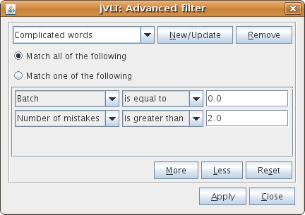
Selecting columns and sorting
If one right-clicks on one of the word list's column headers, a popup menu appears which allows to sort the word list according to the selected column.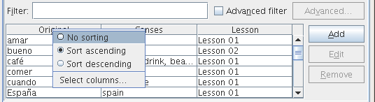
The popup menu also contains the item "Select columns..." which lets the user choose the columns for the word list. Columns can be selected and deselected by first selecting the column name and then pressing the left-arrow button or the right-arrow button, respectively. The order of the column names can be changed using the up-arrow button and the down-arrow button. The column that belongs to the uppermost column name will be shown at the leftmost position of the word list.
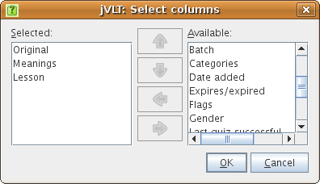
By pressing the "Add", "Edit" and "Remove" buttons next to the word list you can insert, change or delete words, respectively.
Detailed view
The detailed view shows spelling, pronunciation, translation and examples of the word which is currently selected in the word list. In the Appearance tab of the settings dialog you can determine how many details are shown. If an example is selected, the sense associated with the respective example is highlighted. By double-clicking a certain example you get to the examples tab.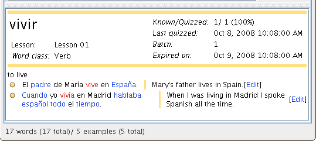
In order to add more information to a word, you can specify audio or image files, which is described in the next section. The files appear on the detailed view as icons. Clicking on an audio file icon results in playing the respective file, clicking on an image file icon opens a new window which shows the image.
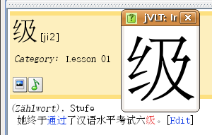
Adding words
By clicking on the "Add" button next to the word list, you can add words to your vocabulary. In the dialog, you can see the two text fields "Original" and "Pronunciation". The first text field is mandatory, the second one is optional. If the word you are going to enter has multiple possible pronunciations, press the "More..." button.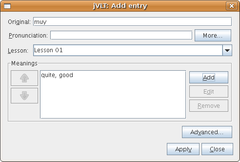
A word must have at least one sense. You can add senses by pressing the "Add sense" button next to the list view and enter strings in the "Translation" field and in the "Definition" field. The definition of a word is a short note about its type, usage etc. You do not need to provide strings for both fields, one is enough. If a word has more than one sense, you can change the order of the senses by using the arrow buttons on the left side of the list view.
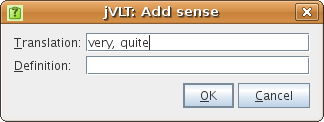
After you finished editing the word, press "Apply" and the word will be added. The dialog won't close after that - you can continue to add words or press "Close" to return to the main window.
Advanced settings
By pressing the "Advanced..." button, you can edit some additional properties of a word.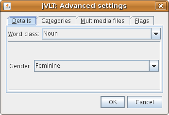
Word details
Whether you can see the Details tab of the dialog depends on whether you have set a language for the dictionary via the "Edit->Properties" menu entry. In the Details tab, you can select a word class, e.g. noun, verb etc. For some of the word classes it may be possible to specify additional details. For example, in the image shown above it is possible to set the gender of a noun.Categories
A word can (optionally) be assigned to categories (e.g., "Family members"). You can choose existing categories from the drop-down list or enter a new category name. After that, press "Add".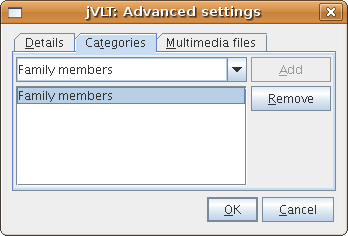
Multimedia Files
You can also specify audio and image files for a word, for example a WAV file which contains the pronunciation. It is possible to choose whether the location of the file should be saved as a relative (e.g. "images\image.gif") or absolute path (e.g. "D:\jvlt\images\image.gif") by (de)selecting the "Use relative path" checkbox. If you choose the former option, the path will be relative to the location of your dictionary file. For example, if your dictionary file is "D:\jvlt\dict.jvlt" and the image location is "images\image.gif", then jVLT will look for the image at "D:\jvlt\images\image.gif".If jVLT cannot play or show files of a certain type, you can specify external commands in the settings dialog.
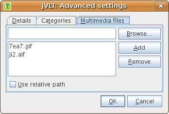
Editing words
You can edit a word by first selecting it in the word list and then pressing the "Edit" button next to the list. Editing a single word is basically the same as adding a word. There is one difference, though: If you want to remove a sense, you have to make sure that there is no example linked to that sense.If you select multiple words before you press "Edit" - either by using the Ctrl key or the Shift key while clicking on the words - you can alter the lesson and advanced settings for all selected words at once. However, you have to be careful: The new settings always overwrite the old ones. For example, if you edit two words at once, one belonging to lesson "A", the other one belonging to lesson "B", and assign a new lesson "C" to both of them, then they will not belong to lesson "A" and "B" any more.
Removing words
In order to remove words, you first have to select them in the word list (Multiple words can be selected by using the Ctrl or the Shift button). After pressing the "Remove" button next to the word list, a dialog will appear that asks you to confirm your decision. Note that all links from examples to the deleted words will be removed. If an example loses all links, then it will be removed, too. The number of examples to be removed and to be modified will also be shown in the dialog.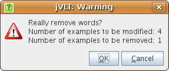
To get the list of linked examples to a specific word, you can look at the detailed view.